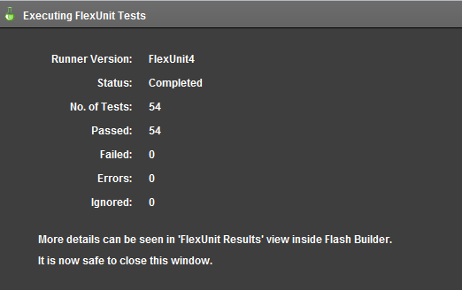
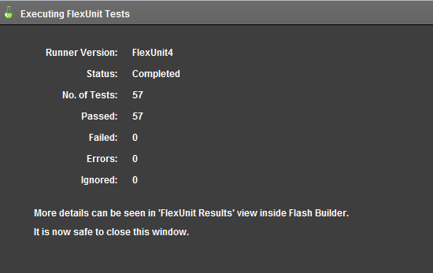

Unit 14 - UIComponents
 Download Unit Project Files
Download Unit Project FilesAll user interface components in Flex extend the UIComponet class. When a UIComponent is added to the display list, the component must go through a complicated process before it appears on the screen and is ready to be tested. User interaction must also be simulated. Because of this, testing UIComponents is an inherently asynchronous process.
Objectives:
After completing this lesson, you should be able to:
- Handle the asynchronous functionality of component creation in the UI
- Test a component off the display list
- Create integration tests for components
Topics
In this unit, you will learn about the following topics:
- Understanding how the display list interacts with UIComponents
- Understanding inherent asynchronous behavior
- Understanding the UI Facade
- Waiting for a component to reach its ready state before testing
Walkthrough 1: Trying to Test a Component Off DisplayList
In this walkthrough you will perform the following tasks:
- Use the UIImpersonator to test UI components.
- Create an Async handler to test a component after its addition to the UIComponent.
Steps
-
In the tests directory, create a new package named login.testcases.
Alternatively, if you didn't complete the previous lesson or your code is not functioning properly, you can import the FlexUnit4Training.fxp project from the Unit14/Start folder. Please refer to Unit 2: Walkthrough 1 for instructions on importing a Flash Builder project.
Create the LoginStartupTest class -
In the package
login.testcases, create a new ActionScript class file named LoginStartupTest.as.Do not delete the automatically generated constructor. You will need it in the next section.
-
Add a private static constant named
LONG_TIMEof data typeint. Set the constant to500.private static const LONG_TIME:int = 500; -
Just below add a private variable named
loginComponentof typeLoginComponent.private var loginComponent:LoginComponent;If you did not use code-completion, add the import for net.digitalprimates.components.login.LoginComponent at this time.
-
Create a new public method named
setup()and a new public method namedteardown(). Decorate them with[Before(async, ui)]and[After(async, ui)].[Before(async, ui)] public function setup():void { } [After(async, ui)] public function teardown() { } -
In the
setup()method, create a new instance ofloginComponent. On the line immediately following, add a call toAsync.proceedOnEvent()passing it the valuesthis,loginComponent, andFlexEvent.CREATION_COMPLETE.[Before(async, ui)] public function setup():void { loginComponent = new LoginComponent(); Async.proceedOnEvent( this, loginComponent, FlexEvent.CREATION_COMPLETE ); }If you did not use code completion, add the imports for org.flexunit.async.Async.
-
Immediately after the async handler add the loginComponent to the UIImpersonator
UIImpersonator.addChild( loginComponent )If you did not use code completion, add the import for org.fluint.uiImpersonation.UIImpersonator.
The UIImpersonator acts as a facade for the UI allowing visual components to be created without being added to the display list. You will learn more about the UIImpersonator and UI facades in the next section.
-
In the
teardown()method, remove the loginComponent from the UIImpersonator and cleanup the instance of loginComponent.[After(async, ui)] public function teardown():void { UIImpersonator.removeChild( loginComponent ); loginComponent = null; } -
Add a public function named
shouldReturnEmptyFieldsOnStartup(), mark it with[Test(ui)]metadata.[Test(ui)] public function shouldReturnEmptyFieldsOnStartup():void { } -
Add two calls to the
assertThat()method in theshouldReturnEmptyFieldsOnStartup()function. The first should check thatloginComponent.usernameTI.textis empty and the other should check thatloginComponent.passwordTI.textis empty.[Test(ui)] public function shouldReturnEmptyFieldsOnStartup():void { assertThat( loginComponent.usernameTI.text == '' ); assertThat( loginComponent.passwordTI.text == '' ); } -
Save LoginStartupTest.as.
Add LoginStartupTest to the Suite -
Add a new ActionScript class named LoginSuite to the login.testcases package within the tests directory. It should have no Superclass or interfaces.
-
Remove the automatically created constructor from the class.
-
Mark the class with
[Suite]and[RunWith("org.flexunit.runners.Suite")]metadata.package login { [Suite] [RunWith("org.flexunit.runners.Suite")] public class LoginSuite { } } -
Add a public variable named
test1of typeLoginStartupTestto the class.[Suite] [RunWith("org.flexunit.runners.Suite")] public class LoginSuite { public var test1:LoginStartupTest; }If you did not use code-completion, add the imports for login.testcases.LoginSequenceTest at this time.
-
Save the LoginSuite.as file.
-
Open the AllSuites.as file in the testcases package within the tests directory.
-
Remove the loginSequenceTest variable.
-
Add a public variable named
loginSuiteof typeLoginSuiteto the class.[Suite] [RunWith("org.flexunit.runners.Suite")] public class AllSuites { public var circleSuite:CircleSuite; public var layoutTest:LayoutTest; public var loginSuite:LoginSuite; } -
Save the AllSuites.as file.
-
Run the FlexUnit4Training.mxml file.
If your MXML file ran successfully you should see the following output in your browser window:
Figure 1: FlexUnit tests passed
Understanding how the display list interacts with UIComponents
In AS3, UIComponents may be instantiated off the display list. When a component is instantiated, basic setup of the component is performed. However, styles, size, and children are not set or created. This means that when testing a component, merely instantiating the component is not enough to put it in a testable state. Creation of the component has only just begun.
When the component is added to the display list, the component creation continues. Once this cycle is complete, the component is in a testable state. Due to the asynchronous nature of all UIComponents, these components require a special way of testing.
Understanding inherent asynchronous behavior
UIComponent creation is broken down into a series of four stages: construction, configuration, attachment and initialization. The time it takes to fully create a component depends on the nature of the component and any children it may have.
Construction Stage
During this stage the component constructor is called. Frequently we add listeners to the component, set properties or initialize other non-display objects.
Configuration Stage
In this stage, properties set by setters are set internally for later configuration.
Attachment Stage
This stage is triggered by a UIComponent being added to the display list. During this stage the parent property is set on the component. Once complete, the component begins initialization.
Initialization Stage
This stage comprises the largest portion of the components creation. During this stage children are created, the component is sized, and styles are set. A component with many children has to wait for each child component to complete creation before its initialization can be considered complete. If those children have children they will in turn need to wait for their children's creation complete event, and so on. During this stage the component goes through the following steps:
- The preinitialize event is dispatched.
- The children of the component are created in the
createChildren()method. - The initialize event is dispatched.
- The state of the component is invalidated.
- The
commitProperties(),measure()andupdateDisplayList()methods are called. - The creationComplete event is dispatched.
Understanding the UI Facade
The UI facade acts as a buffer between the actual UI and the main application. Through the use of a facade the UI can change without affecting the way the rest of the system interacts. In this way, the application needs to know only how to interact with the facade. As long as both the UI and business logic follow the facade's interface, both can change at will without a change from one requiring a change in the other.
The UI facade allows the testing of UIComponents without the display list. However, adding components to the facade will still cause them to go through their entire creation process. There is no need for a component to be visible for it to be tested.
In FlexUnit 4, the UIImpersonator acts as a facade for UI based components. The UIImpersonator contains addChild, removeChild, getChildAt and can be interacted with in the same way as the display list without the extra overhead.
Waiting for a component to reach its ready state before testing
Attempting to test a UIComponent before it reaches its ready state may cause the test to fail. The component may not be properly measured, sized, or positioned and its children may not be fully created. Its properties may have unexpected values.
Fortunately, UIComponents notify us when they have reached their ready state by dispatching the creationComplete event. At this point, we can be reasonably sure all children are created and the component is ready for testing.
Asynchronous Startup
To use asynchronous startup, decorate the Before method with the async annotation. If the startup is due to UI, you will also want to decorate it with ui, as in:
[Before(async, ui)]
public function setup():void {}
The main body of the setup method has to instantiate the component, add the async handler and add it to the facade. The UIImpersonator is a static class that mimics a component on the display list. It contains several static functions that may be used in place of the real functions. To add a UIComponent to the facade, use the UIImpersonator's addChild() method, passing the component as the parameter:
component = new UIComponent();
Async.proceedOnEvent( this, component, "creationComplete", TIMEOUT, timeoutHandler );
UIImpersonator.addChild( component );
Once the creationComplete is dispatched, tests will continue. Be sure to remove the component from the UIImpersonator at the end of the test. Otherwise, the component will remain in memory.
Using async startup chains
In some cases, such as when using the ParameterizedRunner, async startup may not be possible. In this case, we will have to create an async startup chain at the beginning of the test. In this instance we create the component as we would in the setup of the asynchronous startup; however we do it at the beginning of the test. We then wait for the creationComplete call before proceeding with the test.
[Test(async, ui)]
public function componentShouldDoSomething():void {
Component = new UIComponent();
Async.proceedOnEvent( this, component, "creationComplete", TIMEOUT, timeoutHandler );
UIImpersonator.addChild( component );
// rest of the test
}
With this type of test, you will need to clean up the test by removing the component from the UIImpersonator in all async handlers.
Walkthrough 2: Creating integration tests for a component
In this walkthrough you will perform the following tasks:
- Test that a login component dispatches an event with the entered login information when the user attempts to log in.
Steps
-
Open the file LoginIntegrationTest.as in the login.testcases package within the tests directory.
Alternatively, if you didn't complete the previous lesson or your code is not functioning properly, you can import the FlexUnit4Training_wt2.fxp project from the Unit 14/Start folder. Please refer to Unit 2: Walkthrough 1 for instructions on importing a Flash Builder project.
Setup the Parameterized Test -
Immediately before the class declaration, add the
RunWithmetadata for the Parameterized runner.[RunWith("org.flexunit.runners.Parameterized")]Declare two private variables of type
Stringnamedusernameandpassword. Also, declare a protected variable namedloginComponentof typeLoginComponent.private var username:String; private var password:String; protected var loginComponent:LoginComponent;If you did not use code-completion, add the import for net.digitalprimates.components.login at this time.
-
Add the data loader for the login data points.
public static var userAndPasswordDataLoader:UserAndPasswordDataHelper = new UserAndPasswordDataHelper("xml/usersAndPasswords.xml" );If you did not use code-completion, add the import for helper.UserAndPasswordDataHelper at this time.
Create the login sequence test -
Create a new test named
shouldLoginWithProvidedCredentialsthat takes two arguments, a username of typeStringand a password of typeString. Decorate it with the metadata[Test( async, ui, id="userAndPasswordDataLoader" )].[Test(async, ui, id="userAndPasswordDataLoader")] public function shouldLoginWithProvidedCredentials( username:String, password:String ):void { } -
Add a variable named
sequenceof typeSequenceRunnerto theshouldLoginWithProvidedCredentials()method. Instantiate it withthisas its argument.protected function handleComponentReady(event:FlexEvent, passThroughData:Object ):void { var sequence:SequenceRunner = new SequenceRunner( this ); }If you did not use auto complete, add the import for org.fluint.sequence.SequenceRunner.
-
Create a new Object called
passThroughData. Assign it theusernameandpasswordconstructor arguments.var passThroughData:Object = new Object(); passThroughData.username = username; passThroughData.password = password; -
Add a call to the
sequence.addStep()method, pass innew SequenceSetter( loginComponent.usernameTI, {text:username} )as its argument.sequence.addStep( new SequenceSetter( loginComponent.usernameTI, {text:username} ) );SequenceSetter simulates a call to the setter during sequence execution.
If you did not use auto complete, add the import for org.fluint.sequence.SequenceSetter.
-
Add another call to the
sequence.addStep()method just below the last; pass innew SequenceWaiter( loginComponent.usernameTI, FlexEvent.VALUE_COMMIT, LONG_TIME )as its argument.sequence.addStep( new SequenceSetter( loginComponent.usernameTI, {text:username} ) ); sequence.addStep( new SequenceWaiter( loginComponent.usernameTI, FlexEvent.VALUE_COMMIT, LONG_TIME ) );If you did not use code-completion, add the imports for org.fluint.sequence.SequenceSetter and org.fluint.sequence.SequenceWaiter at this time.
-
Add a call to the
sequence.addStep()method; pass innew SequenceSetter( loginComponent.passwordTI, {text:password} )as its argument. -
Add another call to the
sequence.addStep()method just below the last; pass innew SequenceWaiter( loginComponent.passwordTI, FlexEvent.VALUE_COMMIT, LONG_TIME )as its argument.sequence.addStep( new SequenceSetter( loginComponent.passwordTI, {text:password} ) ); sequence.addStep( new SequenceWaiter( loginComponent.passwordTI, FlexEvent.VALUE_COMMIT, LONG_TIME ) ); -
Add a call to the
sequence.addStep()method, pass innew SequenceEventDispatcher( loginComponent.loginBtn, new MouseEvent( MouseEvent.CLICK, true, false ) )as its argument. -
Add another call to the
sequence.addStep()method, pass innew SequenceWaiter( loginComponent, 'loginSuccess', LONG_TIME, handleSuccessTimeout ) )as its argument.sequence.addStep( new SequenceEventDispatcher( loginComponent.loginBtn, new MouseEvent( MouseEvent.CLICK, true, false ) ) ); sequence.addStep( new SequenceWaiter( loginComponent, 'loginRequested', LONG_TIME, handleSuccessTimeout ) );If you did not use code-completion, add the imports for org.fluint.sequence.SequenceEventDispatcher and flash.events.MouseEvent at this time.
-
Add a call to the
sequence.addAssertHandler()method, pass inhandleLoginSuccessandpassThroughDataas its arguments. -
Add a call to the run() method, which is required for the sequence to run.
sequence.addAssertHandler( handleLoginRequested, passThroughData ); sequence.run();With this setup, if the login is requested the event will be handled. If the login request is not fired, control will pass to the timeout handler. The completed method should read as:
[Test(async, ui, dataProver="userData")] public function shouldLoginWithProvidedCredentials( username:String, password:String ):void { var sequence:SequenceRunner = new SequenceRunner( this ); var passThroughData:Object = new Object(); passThroughData.username = username; passThroughData.password = password; sequence.addStep( new SequenceSetter( loginComponent.usernameTI, {text:username} ) ); sequence.addStep( new SequenceWaiter( loginComponent.usernameTI, FlexEvent.VALUE_COMMIT, LONG_TIME ) ); sequence.addStep( new SequenceSetter( loginComponent.passwordTI, {text:password} ) ); sequence.addStep( new SequenceWaiter( loginComponent.passwordTI, FlexEvent.VALUE_COMMIT, LONG_TIME ) ); sequence.addStep( new SequenceEventDispatcher( loginComponent.loginBtn, new MouseEvent( MouseEvent.CLICK, true, false ) ) ); sequence.addStep( new SequenceWaiter( loginComponent, 'loginRequested', LONG_TIME, handleSuccessTimeout ) ); sequence.addAssertHandler( handleLoginRequested, passThroughData ); sequence.run(); } -
Add a protected function named
handleLoginRequested(). It should take a parameter namedeventof typeEventand a parameter namedpassThroughDataof data typeObject.protected function handleLoginRequested( event:Event, passThroughData:Object ):void { } -
Add a call to the
assertThat(). It should assert that thepassThroughData.usernamevariable isequalTo( loginComponent.usernameTI.text.). -
Add a call to the
assertThat(). It should assert that thepassThroughData.passwordinstance variable is equalTo( loginComponent.passwordTI.text ).protected function handleLoginRequested( event:Event, passThroughData:Object ):void { assertThat( passThroughData.username, equalTo( loginComponent.usernameTI.text ) ); assertThat( passThroughData.password, equalTo( loginComponent.passwordTI.text ) ); }If you did not use code-completion, add the imports for org.flexunit.assertThat and org.hamcrest.object.equalTo.
-
Add a protected function named
handleSuccessTimeout()in the class. It should take a parameter namedpassThroughDataof typeObject.protected function handleSuccessTimeout(passThroughData:Object):void{ } -
In the timeout handler, add a call to
fail(), passing it the message "Login request was not received as expected". -
Add another call to the
assertThat()method. It should assert that the instance variablepasswordisnot( equalTo( LoginComponent.PASSWORD ) ).protected function handleSuccessTimeout(passThroughData:Object):void { fail( "Login request was not received as expected" ); } -
Save LoginStartupTest.as.
Run the FlexUnit4Training.mxml file.
If your mxml file ran successfully you should see the following output in your browser window:
Figure 1: FlexUnit tests passed
Summary
Adding components to the display list is an inherently asynchronous process.
UIImpersonator
UI facade for testing components UI components off the display list.
Uses the addChild() method to add components.
Uses the removeChild() method to remove components. UI components must reach a ready state before testing.
UI integration testing
Tests properties and methods of components present in the UI.
May require sequential operation